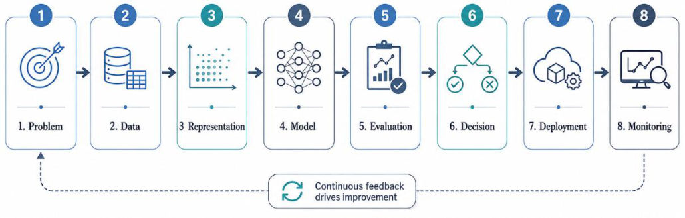
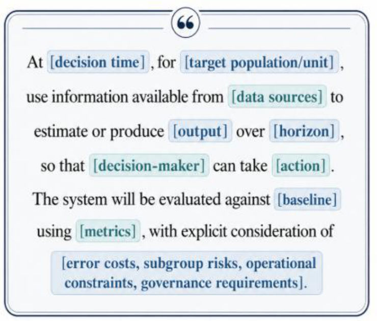
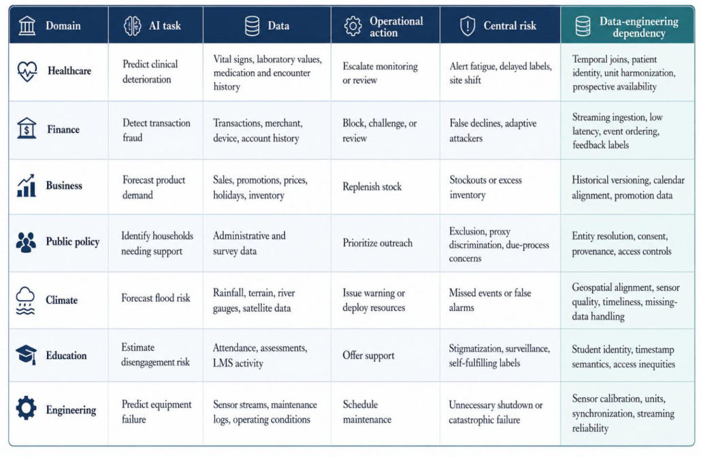
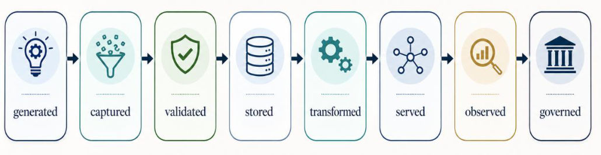
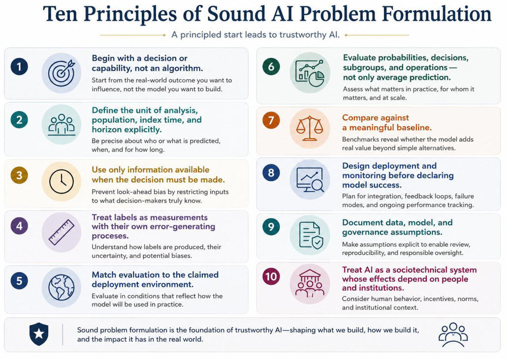
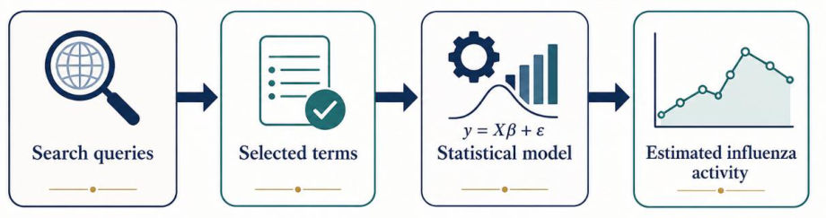
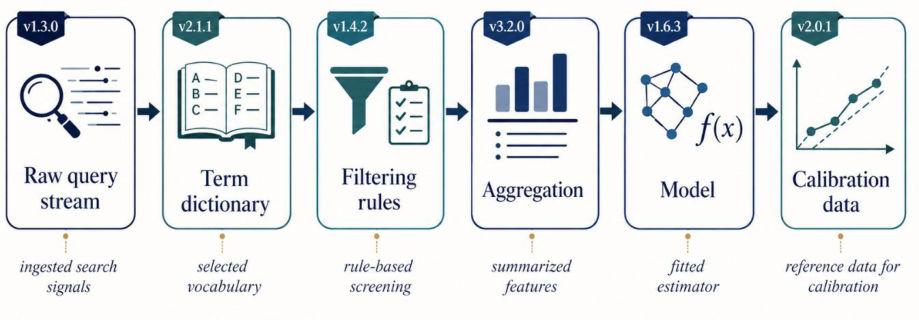
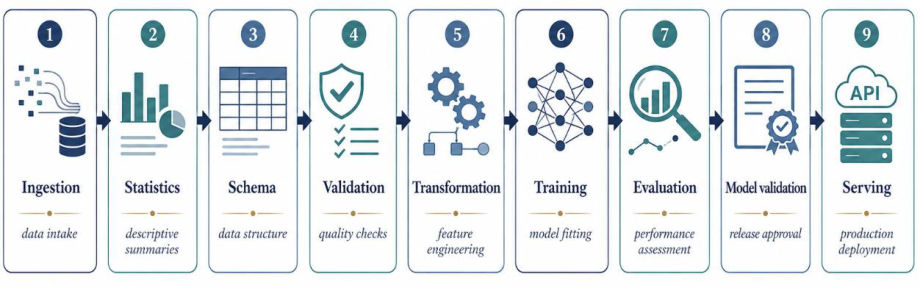
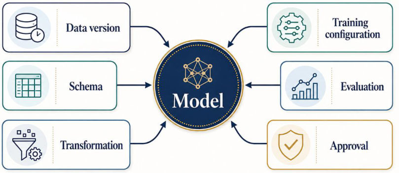

M1 · Part B — The AI Pipeline, Problem Types, Framing, Failures, Data Engineering
Module 1 notes, Sections 1.5–1.12 (PDF pages 49–140). The pipeline from problem to monitoring, the twelve problem types, the framing elements (unit, index time, horizon…), eight failure modes, data engineering, ten principles and three case studies.
Quiz 1's 21-mark scenario was built entirely from this part: formulate the problem (unit, index time, horizon, decision-maker, action), find the data risks, criticize accuracy, set a threshold under capacity, and plan fallback and monitoring.
1. AI as an end-to-end pipeline (1.5)


Eight stages, iterative, not a waterfall — monitoring feeds back into every earlier stage.
1.1 Problem formulation
A robust statement names: target population and decision-maker; the decision and when it occurs; the desired outcome and alternatives (baseline/status quo); consequences of errors (FP vs FN); operational and ethical constraints.
Problem (notes, 1.5.1): Rewrite the problem statement "Build an AI model to predict hospital readmission" so that it names the decision time, population, outcome, decision-maker, action and evaluation.
Worked answer:
Poor: "Build an AI model to predict hospital readmission."
Better: "At the time of discharge, estimate the probability of an unplanned 30-day readmission among adult medical patients so that the discharge team can allocate a limited number of follow-up appointments, while measuring calibration, subgroup performance, preventability, and the consequences of false alerts."
1.2 Data
Data are not neutral. Critical questions: provenance and purpose; definitions and proxies; completeness and consistency; temporal and relational integrity; governance. Artifacts: raw-data inventories, data dictionaries, label specifications, provenance records, quality reports, consent/licensing/access documentation, defined train–validation–test partitions, datasheets (Example 23: skin-lesion dataset — motivation, composition, collection, preprocessing, uses, limitations).
1.3 Representation — six risks (Example 24, ICU sepsis)
| Risk | Meaning / sepsis example |
|---|---|
| Loss of context | 24-h average heart rate hides a spike one hour ago |
| Proxy encoding | Zip code encodes socioeconomic status and race |
| Aggregation bias | 92% hospital-wide accuracy hides failure for children/autoimmune patients |
| Temporal leakage | Antibiotic dose counts updated after diagnosis → 99% test accuracy, fails live |
| Identity errors | Records wrongly merged, or a transferred patient gets a temporary ID |
| Train–serving mismatch | Missing BP imputed with ward median in training, 0 in production → flood of alarms |
1.4 Model
. Choose by data characteristics (size, dimensionality, nonlinearity), task requirements (classification/regression/ranking, need for calibration), operational constraints (latency, memory, compute), governance and trust (interpretability, explainability, robustness), lifecycle costs (maintenance, expertise). The most complex model is not automatically the best. Occam's razor is a heuristic, not a law (Example 26: TB plus rheumatoid arthritis — two diagnoses, not one).
1.5 Evaluation
Four dimensions: predictive performance (discrimination and calibration); fairness & robustness (subgroups, robustness, interpretability); operational viability (cost, latency, stability); real-world impact (decision utility, meaningful baselines, human–system performance).
| Claim | Required validation |
|---|---|
| Works in the future | Temporal validation (train past, test strictly future) |
| Works elsewhere | External validation at different sites |
| Works for everyone | Subgroup evaluation |
| Probabilities are meaningful | Calibration curve |
| Improves decisions | Workflow simulation / prospective trial |
Calibrated: among cases given probability , about experience the outcome (of 0.8-risk cases, ~80%). Discrimination: ability to rank/separate positives from negatives (AUROC).
Model Cards (Mitchell et al.): intended use, evaluation procedure, conditions of good performance, subgroup results, limitations. Example 27 (ED triage), Example 28 (readmission predictor).
1.6 Decision
; action intervene if . A prediction is not a decision (Quiz 1 Q2b). The threshold is never a default 0.5 — it reflects asymmetric error costs, intervention capacity, uncertainty and expected benefit, fairness, human-in-the-loop:
The optimal threshold is rarely the accuracy-maximizing one (Example 30, baggage screening: accuracy-optimal breaks the checkpoint; cost-optimal ). Example 29: rapid-response-team activation.
1.7 Deployment
Where inference runs (cloud/edge/on-premise), maximum latency, which features exist in real time; handling missing/delayed/corrupted inputs, abstention, fallback, instant rollback; who receives outputs and how uncertainty is explained; version control and accountability for monitoring/retraining. A highly accurate model in a Jupyter notebook is not a deployed AI system (Example 31: mobile-banking fraud).
1.8 Monitoring
Input quality; data drift; concept and label drift; feature pipelines; outputs; performance; ground-truth outcomes; operational health; human–system interaction (overrides, automation bias); harm, fairness, safety; feedback loops. Hidden technical debt (Sculley et al. 2015): undeclared consumers and data dependencies, self-reinforcing loops, entanglement, configuration complexity, glue code (Example 32: silent decay of a collections system). Remedies: multi-dimensional monitoring, schema validation, counterfactual logging, versioned feature store.
2. Types of AI problems (1.6, Table 2)
| Type | Output | Typical evaluation | Common framing error |
|---|---|---|---|
| Classification | Discrete class (, , multilabel ) | Accuracy, sensitivity, specificity, F1, AUROC, AUPR | All errors equally costly |
| Regression | MAE, RMSE, , interval coverage | Ignoring skew, heteroscedasticity, asymmetric cost | |
| Ranking | Ordered list | NDCG, MAP, precision@k | Evaluating items ignoring position |
| Recommendation | Personalized items | Recall@k, NDCG, diversity, utility | Optimizing clicks over long-term benefit |
| Clustering | Unlabelled groups | Silhouette, stability, domain validity | Treating clusters as real categories |
| Search | State/path/document | Relevance, path cost, success, latency | Incomplete search space |
| Planning | Action sequence | Goal success, cost, constraint violations | Assuming static, fully known world |
| Control | Stability, tracking error, safety | Ignoring delayed/noisy feedback | |
| Anomaly detection | Anomaly score | Precision–recall, detection delay, false alarms | Assuming all rare cases harmful |
| Generation | New content | Human eval, factuality, safety | Equating fluency with truth |
| Forecasting | MAE, RMSE, MASE, coverage | Random splits of time-ordered data | |
| Causal estimation | Bias, coverage, sensitivity analysis | Correlation as intervention effect | |
| Decision optimization | Expected utility, regret, constraints | Optimizing an incomplete objective |
3. Framing an AI problem (1.7)
Begin with the decision, not the dataset: identify the decision → information needs → analytical paradigm (prediction, causal inference, optimization, automation) → operating context → purpose-built data → evaluate against the decision (Example 33). Canvas: the decision, the actor, the actions, the necessity of AI, simpler alternatives (Example 34: attrition model that changed nothing).
| Element | Meaning |
|---|---|
| Population & unit of analysis | Who/what each prediction is for (patient, encounter, image, pipe); same unit across splits leaks (Example 35, chest X-rays) |
| Index time | The exact moment the prediction is made; every feature must be available at or before it |
| Prediction horizon | How far ahead; must fit the window to act (Example 36 turbine gearbox: 24 h useless, 14–30 days useful) |
| Inputs | Definition/source, unit/type, update frequency, missingness, timestamp semantics, availability at inference, privacy class, transformations, known biases |
| Output | Class, value, probability, interval, ranking, score, risk tier, recommendation, plan, action, artifact, abstention |
| Labels / ground truth | Sources: objective measurement, human evaluation, administrative records, derived proxies. Interrogate construct validity, access bias, measurement disparities, what "negative" means, status-quo bias |
| Constraints | Technical/infrastructure; resource/operational; trust/usability; governance/ethics/compliance |
| Stakeholders | Subjects, targets, operators/experts, broader ecosystem — objectives conflict (Example 37 fraud) |
| Cost of error | TP, FN (miss), FP (false alarm), TN — asymmetric, incl. non-financial harm |
| Baseline & counterfactual | Current judgement, simple heuristic, status quo, legacy system, alternative policies |
| Evaluation plan | Primary and guardrail metrics, validation strategy, reliability/fairness, governance — locked before training (no metric shopping) |




At [decision time], for [target population or unit], using only [available information], produce [required output] concerning [prediction horizon or outcome period], so that [decision-maker] can [action]. The system will be compared with [baseline] and evaluated using [metrics], while accounting for [error costs, subgroup risks, operational constraints, and governance requirements].
4. Eight failure modes (1.9)
- Solving the wrong problem — accurate model, wrong decision/target.
- Poor data quality — missingness, errors, proxies, selection.
- Data leakage — target, temporal, group, preprocessing, label, benchmark contamination.
- Weak evaluation — averages hide subgroup failure; no calibration, baseline or external test.
- Underspecification — many models fit the data equally but behave differently in deployment.
- Distribution shift — deployment data differ from training data.
- Ignoring workflow and human factors — alert fatigue, automation bias, unusable outputs.
- No deployment or monitoring plan — silent degradation.
5. Data engineering (1.10)


Data engineering must engineer semantics (what a variable means), temporal correctness (), training–serving consistency, lineage/reproducibility, scale and timeliness, governance in infrastructure, and the data needed for monitoring. Reliable model ⇏ reliable AI system. Data engineering is "the connective tissue of the complete AI lifecycle".
6. Ten principles (1.11, Figure 9)


- Begin with a decision or capability, not an algorithm. 2. Define unit, population, index time and horizon. 3. Use only information available at decision time. 4. Treat labels as measurements with their own error processes. 5. Match evaluation to the claimed deployment. 6. Evaluate probabilities, decisions, subgroups and operations, not only averages. 7. Compare against a meaningful baseline. 8. Design deployment and monitoring before declaring success. 9. Document data, model and governance assumptions. 10. Treat AI as a socio-technical system.
7. Three case studies (1.12)
7.1 Google Flu Trends — scale could not replace measurement




Proxy: search behaviour ≈ disease activity — but search depends on symptoms, media, anxiety, engine design, access, habits. Feb 2013 estimates were > 2× CDC; overestimated in 100 of 108 weeks from Aug 2011 (Lazer et al. 2014). Causes: big-data hubris (≈50 million candidate terms vs 1,152 weekly observations → chance correlations; undocumented terms) and algorithm dynamics (platform and user behaviour changed the data-generating process). Combined model GFT + lagged CDC: MAE ≈ 0.232 vs 0.486 (GFT) and 0.311 (CDC). Lessons: volume doesn't remove measurement bias; a proxy is useful only while its relation to the target is stable; platforms are active parts of data generation; document features and transformations; hybrid beats replacement; monitor proxy validity.
7.2 Epic Sepsis Model — workflow-aware validation
External validation (Wong et al., JAMA IM 2021): 27,697 patients, 38,455 hospitalizations, sepsis in 2,552 (~7%), scores every 15 min. AUROC ≈ 0.63. At score ≥ 6: alerts in 18% of hospitalizations; 67% of sepsis cases missed; only 183 cases found among patients not already on timely antibiotics. Issues: label built partly from clinician actions; must predict before recognition; alert value depends on reaching the right person with a feasible response; event/recording/availability/correction times (lab drawn 10:00, displayed 11:05); identity across encounters; informative missingness; site variation. . Seven-phase plan: formulation → label design → data construction (feature store, event-time semantics, patient-level partitions) → validation (temporal, external, calibration, subgroup, silent) → workflow simulation → controlled prospective deployment → monitoring. Predictive timing is as important as predictive accuracy.
7.3 TensorFlow Extended — data engineering as production architecture




A training script is not a production system. TFX components: versioned ingestion; statistics; schema (machine-checkable contracts); data validation (missing columns, new categories, ranges, drift); shared transformations (no training–serving skew); training records code/data versions, hyperparameters, seeds; evaluation vs the current production model; validation gates (block if metrics/subgroups/fairness/latency fail); serving with monitoring and rollback. Months → weeks to production; ≈2% more Google Play installs. Lightweight version: version-controlled SQL/Python, orchestration, schema tests, experiment tracker, model registry, containers, dashboards, approvals.
Pipeline thinking: decision first; index time and horizon; labels are measurements; evaluate calibration, subgroups, baselines and decisions; plan deployment and monitoring; the data-engineering system is most of the AI system.
Source material
The original documents behind these notes. Pick a tab to read it here, page by page, or open it in a new tab.